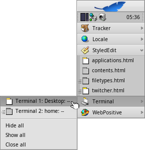

| インデックス |
|
Deskbar メニュー トレイ 実行中プログラムの一覧 |
Deskbar
Deskbar は小さなパネルで、初期設定では画面右上隅に配置されています。これは、Windows でのスタートボタンを備えたタスクバーの Haiku 版です。アプリケーションや設定を開くための Deskbar メニューと、時計やその他のツールを表示するトレイを持ち、実行中のプログラムの一覧をその下に表示します。

トレイの片側にある凸の部分をつかんで (上図の矢印を見てください) 新しい位置にドラッグ＆ドロップすると、画面の四隅、または上下に Deskbar を移動できます。
Deskbar メニューに凸の部分をドラッグ＆ドロップすれば、バーを小さく折りたたむこともできます。それは普通のウィンドウのタブの高さであるため、スクリーン全体を占めるウィンドウでも、時計とアイコンを備えた Deskbarトレイを隠しません。
トレイのもう一方の凸の部分をつまんで、マウスを左右に動かすと、Deskbar の幅を変更できます。

幅のより広い Deskbar は、トレイ内の 1 行により多くのアイコンを置けます。それほどよくあることではありませんが、特に大きなアイコンを使用している場合、それはまた、実行中プログラム一覧内の長いアプリケーション名を切り詰めます。
 Deskbar メニュー
Deskbar メニュー
Deskbar の上部をクリックするとメニューが開きます。

このシステムについて (About This System) - システムの基本情報と、Haiku プロジェクトのライセンスやクレジットを表示します。
検索… (Find...) - クエリダイアログを開きます。
レプリカントを表示 (Show Replicants) - 小さなレプリカントウィジェットの表示 / 非表示を切り替えます。ドラッグ操作、削除、コンテキストメニューへのアクセスに使用します。
マウント (Mount) - デスクトップを右クリックした際に呼び出されるメニューと同様のオプションを提供します (ボリュームのマウントを参照してください)。
Deskbar の設定 (Deskbar Preferences) - Deskbar を設定するパネルを開きます (以下を参照してください)。
シャットダウン… (Shutdown...) - か、 を選んで実行します。
最近使ったドキュメント、フォルダー、アプリケーション (Recent Documents, Folders, Applications) - 最近利用したドキュメント、フォルダー、アプリケーションの一覧です (下の を参照してください)。
Applications、Demos、Deskbar Applets、Preferences - インストール済のアプリケーション、デモ、アプレットと設定の一覧です。
ほかのプログラム (またはフォルダー、ドキュメント、クエリなど) へのリンクを追加するには、それらを ~/config/settings/deskbar/menu/ に入れます。
Deskbar 設定

Deskbar 設定パネルは、3 つのセクションに分かれます。
アプリケーション
以下の設定は、インストール済アプリケーションには適用されませんが、実行中アプリケーションリストの動作や見た目に適用されます。
| 実行中アプリケーションリストをアルファベット順に並べ替えます。 | ||
| アルファベット順に並べ替えた後も、Tracker を常に一覧の先頭に配置します。 | ||
| Deskbar に表示されたプログラムの全ウィンドウをただちに表示 / 非表示にする、小さなウィジェットを提供します。 | ||
| 新しく起動したプログラムのウィンドウを自動的に開き、Deskbar 内のプログラム項目の下に表示します。 | ||
| アプリケーションのテキストラベルを除きます。 | ||
| 実行中アプリケーションのアイコンサイズを調整します。 |
メニュー (Menu)
Deskbar の最初の 2 つのメニューは固定されていますが、ユーザーは、 より下のメニューをカスタマイズできます。
ここでは、Deskbar メニューに表示する、最近利用したドキュメント、フォルダー、アプリケーションの数を指定できます。または、それらを表示させないかどうかを設定できます。
ボタンは ~/config/settings/deskbar/menu/ フォルダーを開きます。そこには、Deskbar で表示されるファイルとフォルダーが見つかるでしょう。初期設定では、、、、 となっています。
このフォルダーに対してコピー / 削除するだけで、アプリケーションへのリンクやドキュメント、またはクエリのような項目でさえも、追加または削除できます。
パッケージからインストールされたプログラムは、自動的に Deskbar メニュー内に項目を作成します。パッケージをインストールするにつれて、それは少し込み入ってくるでしょう。もしユーザーが総合的に管理するのが好きで、自分自身でリンクした (たぶんサブフォルダーに分類された) アプリケーションを見たいだけなら、以下がそのやり方です。
menu フォルダーのリンクを、~/config/settings/deskbar/ 内に作成し、それを menu_entries にリネームします。以上は、ターミナルから以下のように実現できます。
ln -s ~/config/settings/deskbar/menu ~/config/settings/deskbar/menu_entries
Window (ウィンドウ)
最後に、Deskbar ウィンドウの設定があります。
| Deskbar は常にほかのすべてのウィンドウより前面にいます。 | ||
| マウスのポインターが Deskbar とスクリーンの境に触れたときに、Deskbar は最前面に出てきます。また、デスクトップから離れると背面に移動します。 | ||
| Deskbar は数ピクセルに縮小し、マウスポインターがタッチした時だけ現れます。 |
トレイ

トレイに配置されているものの 1 つに時計があります。時計にカーソルを合わせると、ツールチップに日付が表示されます。左クリックでカレンダーが表示されます。時計の表示 / 非表示を切り替えるには、時計を右クリックするか、日付と時間プレファレンスを起動してください。
どのプログラムも、トレイにアイコンをインストールしてユーザーにインターフェースを提供できます。たとえばメールシステムでは、未読メールがある時は別のシンボルを表示します。さらに、メールの作成や確認などを行うためにコンテキストメニューを提供します。もう 1 つの例として、プロセスコントローラーはトレイアイコンを情報 (CPU / メモリー使用状況) 表示とコンテキストメニューの提供に使用します。
実行中プログラムの一覧

特定の実行中アプリケーションを変更するには、Deskbar 中のアプリケーションの項目をクリックし、サブメニューからウィンドウの (1 つ) を選びます。右クリックでウィンドウを、または ことができます。アプリケーション全体も同様にできます。
SHIFT と CTRL を押しながらアプリケーション上でクリックすると、すべてのウィンドウを隠します。CTRL を押しながらクリックすれば、ウィンドウを再表示します。
"エキスパンダー (expander)" 設定を使って、アプリケーションのウィンドっをすべて表示するとき、ウィンドウまたはアプリ上でミドルクリックして新しいインスタンスを開始できます。例えば、実行中の StyledEdit をミドルクリックすると新規のドキュメントウィンドウを開きます。
多分もっと便利なこと: SHIFT を押しながらウィンドウをミドルクリックするとそれを閉じます。たとえば、たくさん開いた Tracker ウィンドっを閉じたいときに便利です。
Deskbar の設定でエキスパンダーを有効にしているなら、アプリケーションのウィンドウの一覧を展開または折りたためます。
各アプリケーションウィンドウの前には、その状態を示すシンボルが付いています。明るいシンボルはウィンドウが可視であること、暗いものは最小化されていることを意味します。シンボルの前に引かれている 3 本線は、ウィンドウが現在のワークスペースに存在しないことを示しています。